Cada conta, uma oração. Cada fio, uma história.
Criados à mão com carinho e devoção, nossos terços são muito mais do que objetos religiosos — são presentes de graça para quem você ama.
✦ Ver MostruárioArtesã & Mãe de família
Meu nome é Marcelle, sou casada, mãe de três rapazes e uma linda mocinha. Católica de berço, cresci inspirada pela fé da minha mãe, que sempre rezava o Santo Terço. Durante a pandemia, nasceu a MariaMãe Terços. O que começou como uma fonte de renda tornou-se uma missão de fé.
Ao confeccionar cada terço, encontro um momento de oração e sinto a presença de Deus em cada detalhe. Meu desejo é que cada peça seja um instrumento de devoção, esperança e aproximação com Deus e Nossa Senhora.
Conheça as nossas coleções e sinta a devoção em cada detalhe
Clássicos e elegantes, feitos com contas de cristal, madeira e acrílico em diversas cores. Ideais para devoção diária ou para presentear.
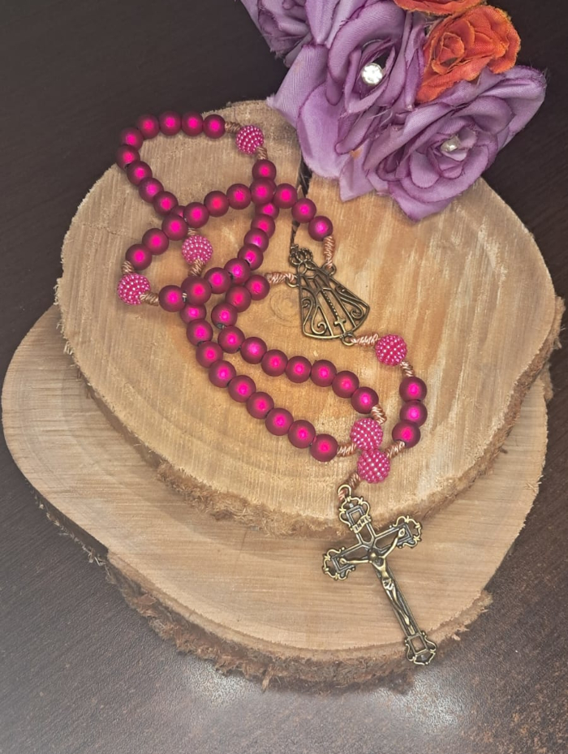
Lindo terço artesanal magenta com detalhes em ouro velho e medalha de Nossa Senhora Aparecida. Perfeito para momentos de fé ou para presentear.
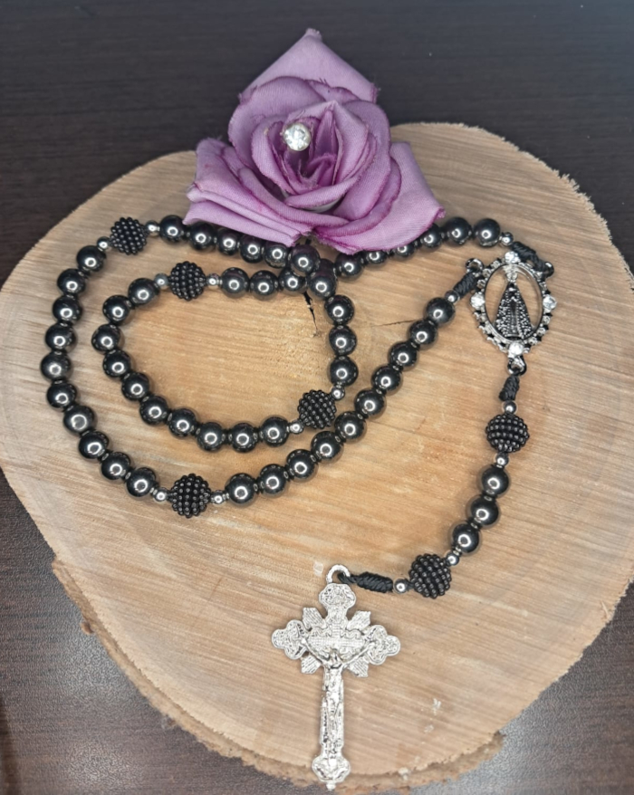
Lindo terço artesanal em tom grafite com medalha cravejada de Nossa Senhora Aparecida e crucifixo prata. Elegância e devoção para o seu dia.
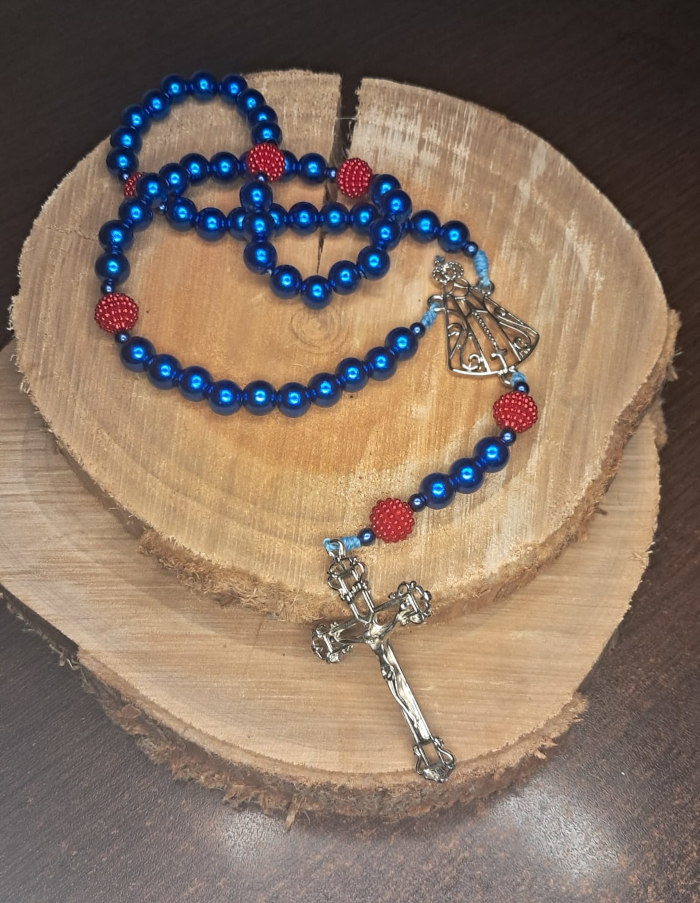
Lindo terço artesanal em azul brilhante com detalhes vermelhos, medalha recortada de Aparecida e cruz prata. Perfeito para expressar sua devoção.
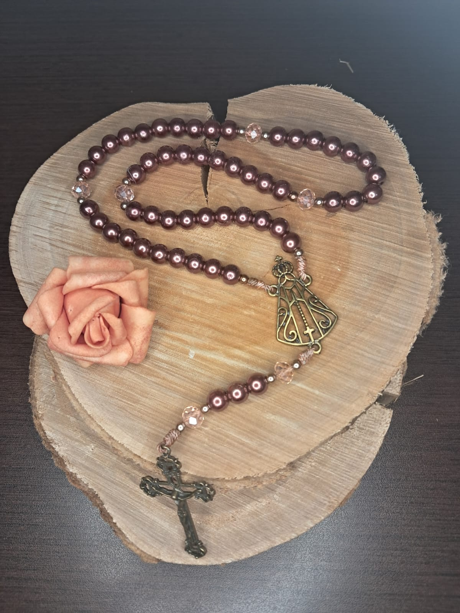
Elegante terço artesanal marrom perolado com contas de cristal translúcido, medalha de Aparecida e cruz em ouro velho. Sofisticação e fé diária.
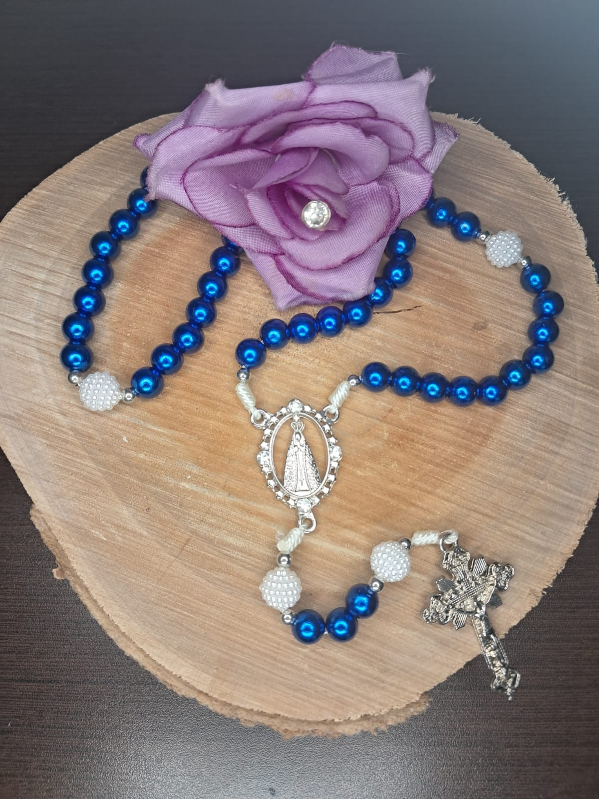
Lindo terço artesanal em azul brilhante com contas do Pai-Nosso brancas texturizadas, medalha de Aparecida e cruz prata. Perfeito para oração.
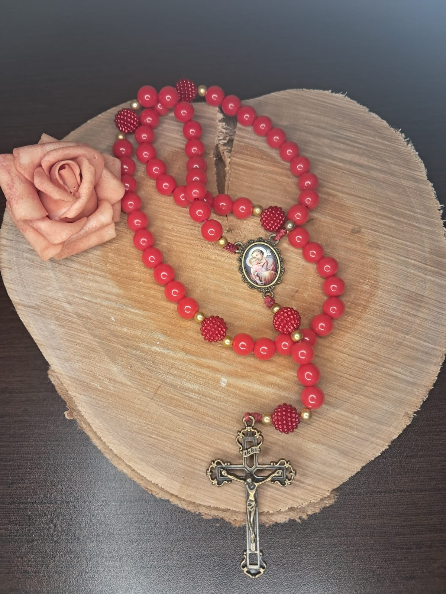
Elegante terço artesanal vermelho com medalha resinada de São José, detalhes dourados e crucifixo em ouro velho. Uma linda peça de proteção e fé.
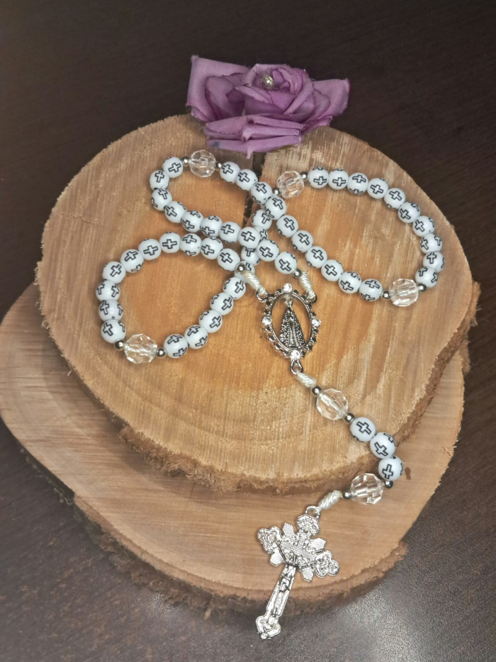
Terço artesanal exclusivo com contas brancas estampadas de cruzes, Pai-Nosso em cristal translúcido e medalha cravejada. Devoção com estilo.
Com a poderosa Medalha de São Bento proteção contra o mal e bênçãos para o lar. Tradição e espiritualidade em cada conta.
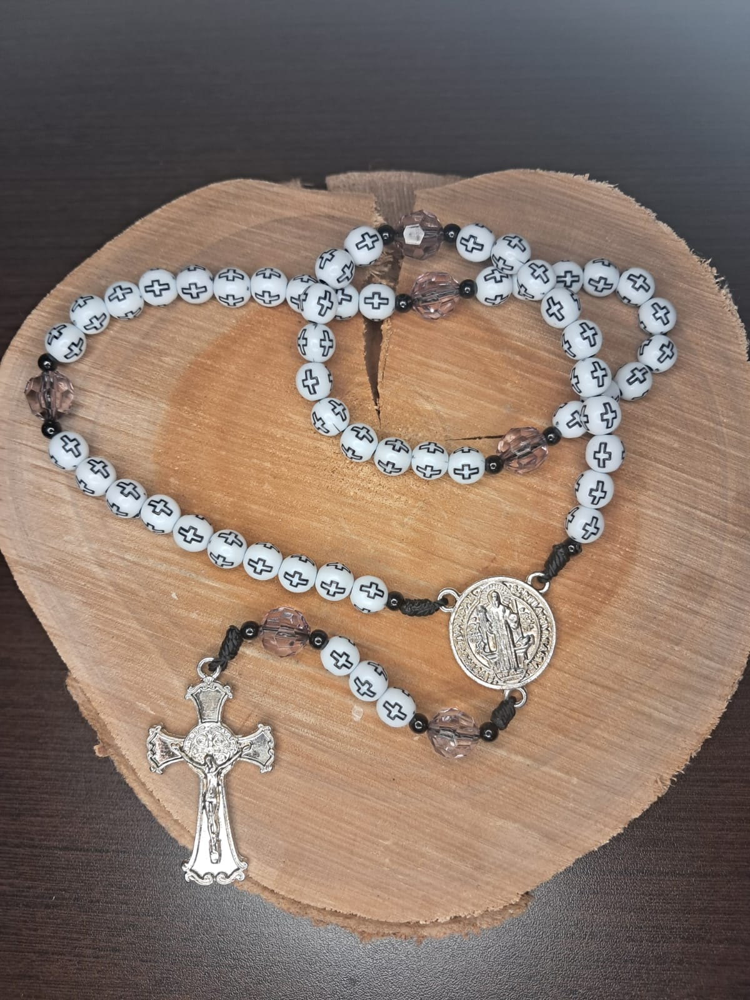
Terço artesanal com contas brancas estampadas de cruzes, Pai-Nosso em cristal fumê e medalha de São Bento prata. Proteção e estilo na sua fé.
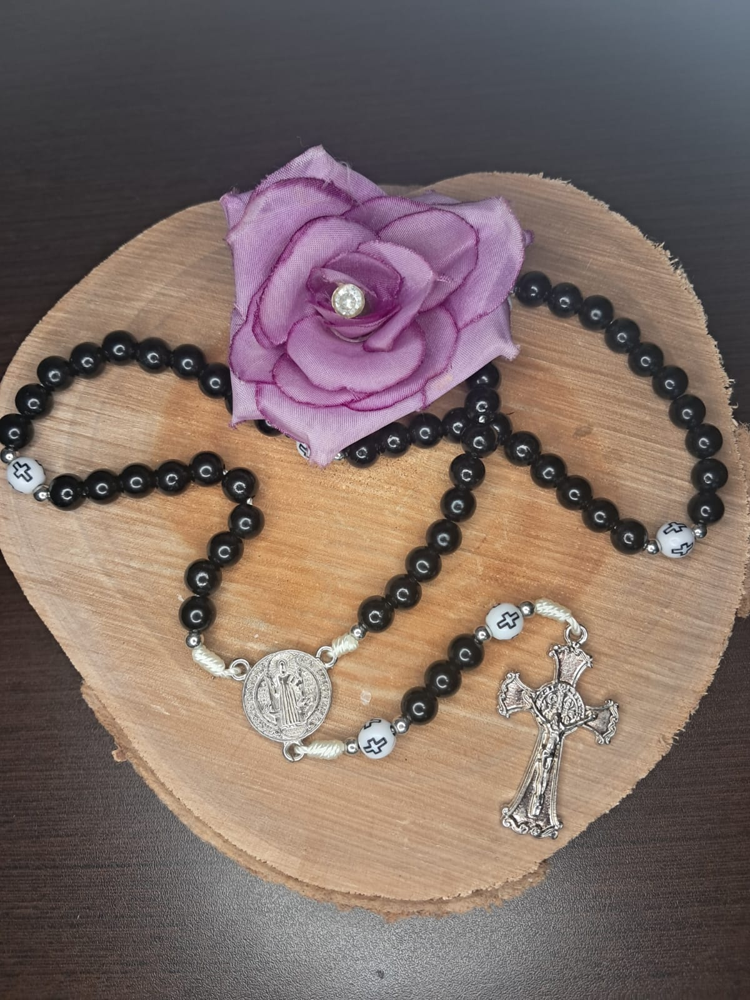
Lindo terço artesanal preto brilhante com detalhes de cruzes brancas, medalha de São Bento e crucifixo prata. Uma peça clássica de muita fé.
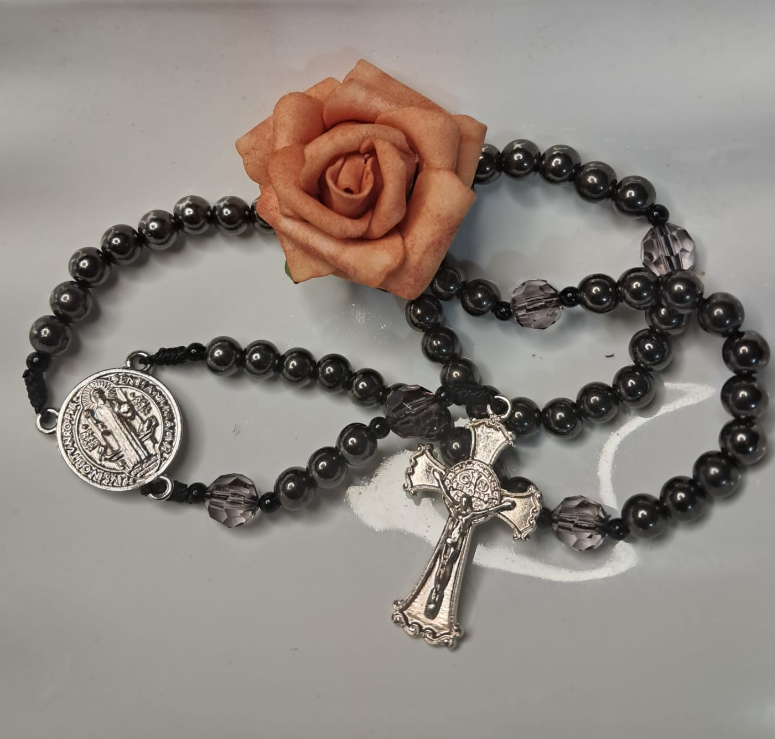
Elegante terço artesanal em tom grafite com contas do Pai-Nosso em cristal fumê facetado, medalha de São Bento e cruz prata. Fé com sofisticação.
.png)
Lindo terço artesanal com contas brancas, medalhas de São Bento intercaladas e crucifixo prata. Uma peça clean e marcante de proteção diária.
Veja algumas das encomendas especiais que já fizemos com amor. O seu pode ser ainda mais único!
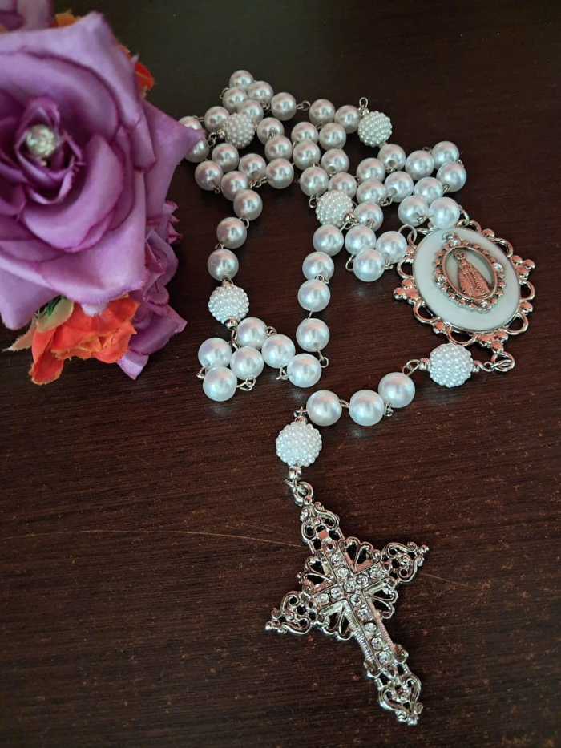
Exclusivo terço de noiva em pérolas brancas com Pai-Nosso texturizado, medalha oval de Aparecida e cruz cravejada de strass. Luxo para o seu altar.
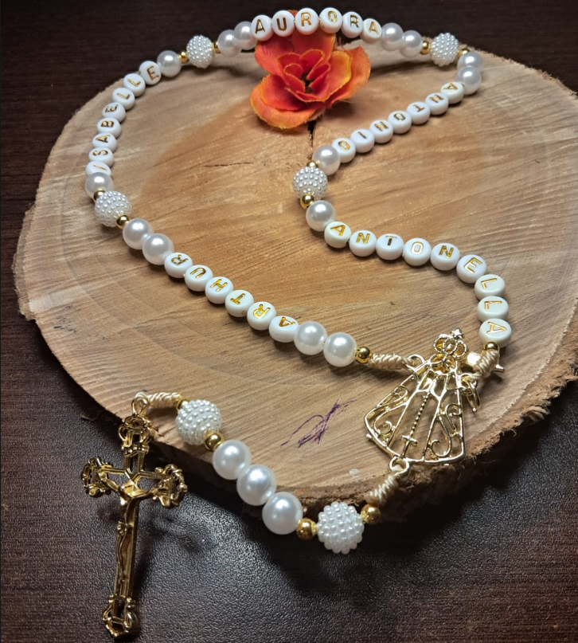
Um terço feito exclusivamente para você e para a sua rotina de oração. Personalize cada detalhe da sua peça: escolha o tipo de conta, o crucifixo e o seu santo de devoção. Deixe-o ainda mais especial adicionando o seu nome ou de quem você ama para presentear.
.png)
Um terço feito exclusivamente para você e para a sua rotina de oração. Personalize cada detalhe da sua peça: escolha o tipo de conta, o crucifixo e o seu santo de devoção. Deixe-o ainda mais especial adicionando o seu nome ou de quem você ama para presentear.
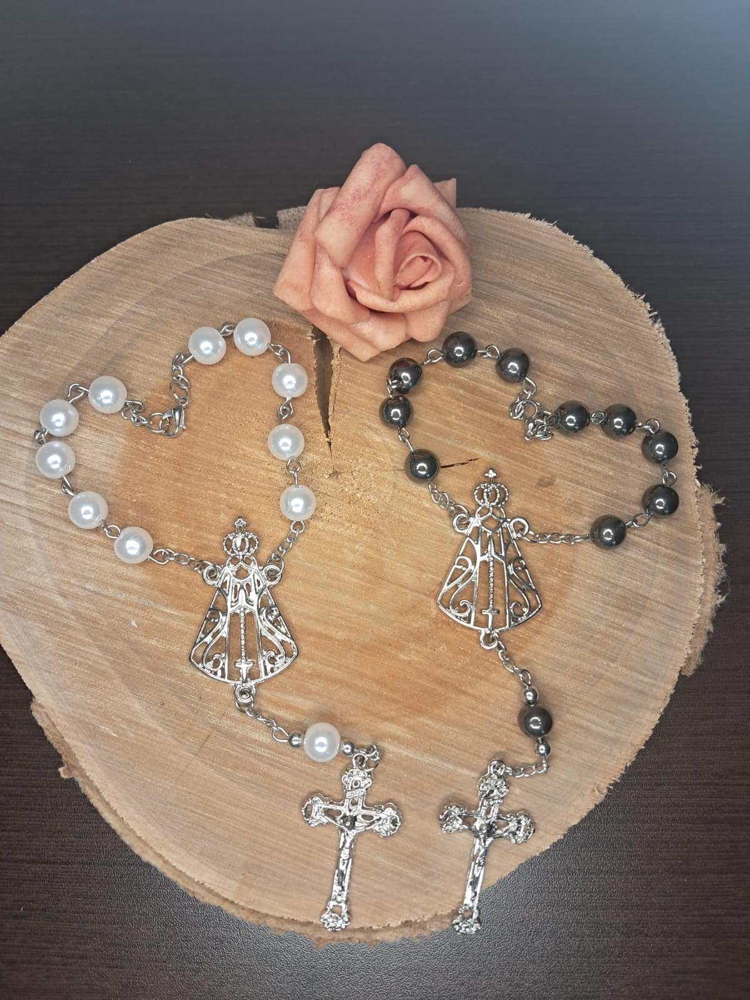
Delicadas dezenas artesanais em corrente prateada, disponíveis em pérola branca ou grafite. Acabamento fino com medalha recortada e crucifixo.
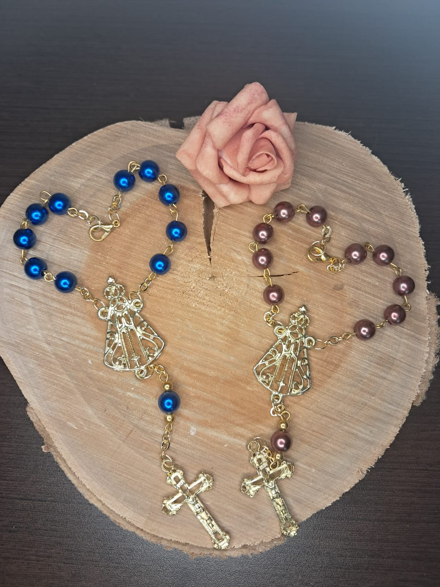
Línguas dezenas com acabamento dourado e contas peroladas em azul ou marrom. Detalhe delicado da medalha de Aparecida, ideal para levar a fé contigo.
Entre em contato pelo WhatsApp para tirar dúvidas, fazer encomendas personalizadas ou combinar a entrega. Será um prazer atendê-la com carinho!
Falar no WhatsApp